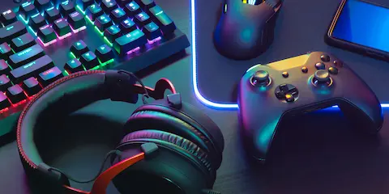

🕹️ GAMING
📅 16 · NOV · 2026

Nintendo anunció el 11 de noviembre que el remake de The Legend of Zelda: Ocarina of Time, lanzado el 5 de noviembre en exclusiva para Switch 2, vendió más de 5,2 millones de unidades en sus cuatro primeros días, 810.000 de ellas en Japón. Es el mejor arranque de cuatro días de cualquier juego publicado por Nintendo en la consola; solo Mario Kart World lo supera en ventas totales. El remake renueva los controles con cámara libre, botón de salto y carrera, y trae las escenas con voces. Llega justo cuando GTA VI, que sale el jueves 19 en PS5 y Xbox Series, ya tiene la precarga disponible.